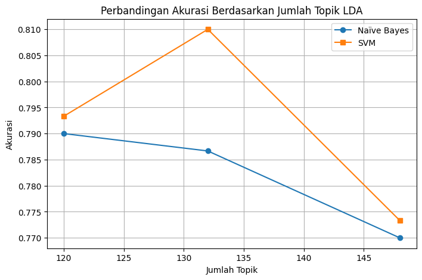

klasifikasi berita dengan ekstraksi fitur model topik modelling dengan classifier naïve bayes dan SVM#
!pip install gensim
Requirement already satisfied: gensim in /usr/local/lib/python3.12/dist-packages (4.3.3)
Requirement already satisfied: numpy<2.0,>=1.18.5 in /usr/local/lib/python3.12/dist-packages (from gensim) (1.26.4)
Requirement already satisfied: scipy<1.14.0,>=1.7.0 in /usr/local/lib/python3.12/dist-packages (from gensim) (1.13.1)
Requirement already satisfied: smart-open>=1.8.1 in /usr/local/lib/python3.12/dist-packages (from gensim) (7.3.1)
Requirement already satisfied: wrapt in /usr/local/lib/python3.12/dist-packages (from smart-open>=1.8.1->gensim) (1.17.3)
!pip install gensim matplotlib seaborn scikit-learn pandas numpy
Requirement already satisfied: gensim in /usr/local/lib/python3.12/dist-packages (4.3.3)
Requirement already satisfied: matplotlib in /usr/local/lib/python3.12/dist-packages (3.10.0)
Requirement already satisfied: seaborn in /usr/local/lib/python3.12/dist-packages (0.13.2)
Requirement already satisfied: scikit-learn in /usr/local/lib/python3.12/dist-packages (1.6.1)
Requirement already satisfied: pandas in /usr/local/lib/python3.12/dist-packages (2.2.2)
Requirement already satisfied: numpy in /usr/local/lib/python3.12/dist-packages (1.26.4)
Requirement already satisfied: scipy<1.14.0,>=1.7.0 in /usr/local/lib/python3.12/dist-packages (from gensim) (1.13.1)
Requirement already satisfied: smart-open>=1.8.1 in /usr/local/lib/python3.12/dist-packages (from gensim) (7.3.1)
Requirement already satisfied: contourpy>=1.0.1 in /usr/local/lib/python3.12/dist-packages (from matplotlib) (1.3.3)
Requirement already satisfied: cycler>=0.10 in /usr/local/lib/python3.12/dist-packages (from matplotlib) (0.12.1)
Requirement already satisfied: fonttools>=4.22.0 in /usr/local/lib/python3.12/dist-packages (from matplotlib) (4.60.1)
Requirement already satisfied: kiwisolver>=1.3.1 in /usr/local/lib/python3.12/dist-packages (from matplotlib) (1.4.9)
Requirement already satisfied: packaging>=20.0 in /usr/local/lib/python3.12/dist-packages (from matplotlib) (25.0)
Requirement already satisfied: pillow>=8 in /usr/local/lib/python3.12/dist-packages (from matplotlib) (11.3.0)
Requirement already satisfied: pyparsing>=2.3.1 in /usr/local/lib/python3.12/dist-packages (from matplotlib) (3.2.5)
Requirement already satisfied: python-dateutil>=2.7 in /usr/local/lib/python3.12/dist-packages (from matplotlib) (2.9.0.post0)
Requirement already satisfied: joblib>=1.2.0 in /usr/local/lib/python3.12/dist-packages (from scikit-learn) (1.5.2)
Requirement already satisfied: threadpoolctl>=3.1.0 in /usr/local/lib/python3.12/dist-packages (from scikit-learn) (3.6.0)
Requirement already satisfied: pytz>=2020.1 in /usr/local/lib/python3.12/dist-packages (from pandas) (2025.2)
Requirement already satisfied: tzdata>=2022.7 in /usr/local/lib/python3.12/dist-packages (from pandas) (2025.2)
Requirement already satisfied: six>=1.5 in /usr/local/lib/python3.12/dist-packages (from python-dateutil>=2.7->matplotlib) (1.17.0)
Requirement already satisfied: wrapt in /usr/local/lib/python3.12/dist-packages (from smart-open>=1.8.1->gensim) (1.17.3)
!pip install umap-learn
Requirement already satisfied: umap-learn in /usr/local/lib/python3.12/dist-packages (0.5.9.post2)
Requirement already satisfied: numpy>=1.23 in /usr/local/lib/python3.12/dist-packages (from umap-learn) (1.26.4)
Requirement already satisfied: scipy>=1.3.1 in /usr/local/lib/python3.12/dist-packages (from umap-learn) (1.13.1)
Requirement already satisfied: scikit-learn>=1.6 in /usr/local/lib/python3.12/dist-packages (from umap-learn) (1.6.1)
Requirement already satisfied: numba>=0.51.2 in /usr/local/lib/python3.12/dist-packages (from umap-learn) (0.60.0)
Requirement already satisfied: pynndescent>=0.5 in /usr/local/lib/python3.12/dist-packages (from umap-learn) (0.5.13)
Requirement already satisfied: tqdm in /usr/local/lib/python3.12/dist-packages (from umap-learn) (4.67.1)
Requirement already satisfied: llvmlite<0.44,>=0.43.0dev0 in /usr/local/lib/python3.12/dist-packages (from numba>=0.51.2->umap-learn) (0.43.0)
Requirement already satisfied: joblib>=0.11 in /usr/local/lib/python3.12/dist-packages (from pynndescent>=0.5->umap-learn) (1.5.2)
Requirement already satisfied: threadpoolctl>=3.1.0 in /usr/local/lib/python3.12/dist-packages (from scikit-learn>=1.6->umap-learn) (3.6.0)
import pandas as pd
import numpy as np
import re
import nltk
from gensim import corpora, models
from sklearn.naive_bayes import MultinomialNB
from sklearn.svm import LinearSVC
from sklearn.metrics import accuracy_score, classification_report
# Download stopword bahasa Indonesia
nltk.download('stopwords')
from nltk.corpus import stopwords
stop_words = stopwords.words('indonesian')
[nltk_data] Downloading package stopwords to /root/nltk_data...
[nltk_data] Package stopwords is already up-to-date!
from google.colab import drive
drive.mount('/content/drive')
Drive already mounted at /content/drive; to attempt to forcibly remount, call drive.mount("/content/drive", force_remount=True).
# Baca data
df_path = "/content/drive/MyDrive/PPW/UTS/Berita.csv"
df = pd.read_csv(df_path)
# Cek kolom
df.head(20)
| No | judul | berita | tanggal | kategori | link | |
|---|---|---|---|---|---|---|
| 0 | 1 | Airlangga Harap Kenaikan UMP Tingkatkan Daya B... | Menteri Koordinator (Menko) Bidang Perekonomia... | Minggu, 01 Des 2024 23:40 WIB | Ekonomi | https://www.cnnindonesia.com/ekonomi/202412012... |
| 1 | 2 | PT SIER Beri Penghargaan untuk 50 Tenant Terba... | Dalam rangka memeriahkan hari jadi ke-50, PT S... | Minggu, 01 Des 2024 20:45 WIB | Ekonomi | https://www.cnnindonesia.com/ekonomi/202412012... |
| 2 | 3 | Prabowo Bakal Bentuk Kementerian Penerimaan Ne... | Wacana Presiden Prabowo Subianto akan membentu... | Minggu, 01 Des 2024 19:40 WIB | Ekonomi | https://www.cnnindonesia.com/ekonomi/202412011... |
| 3 | 4 | Sinergi Kemenag & BPJS Ketenagakerjaan Lindung... | BPJS Ketenagakerjaan dan Kementerian Agama (Ke... | Minggu, 01 Des 2024 19:03 WIB | Ekonomi | https://www.cnnindonesia.com/ekonomi/202412011... |
| 4 | 5 | Pemerintah Segera Bentuk Satgas PHK Usai Tetap... | Pemerintah akan segera membentuk Satuan Tugas ... | Minggu, 01 Des 2024 19:00 WIB | Ekonomi | https://www.cnnindonesia.com/ekonomi/202412011... |
| 5 | 6 | AHY Buka-bukaan Nasib Kelanjutan Pembangunan I... | Menko Bidang Infrastruktur dan Pembangunan Kew... | Minggu, 01 Des 2024 18:20 WIB | Ekonomi | https://www.cnnindonesia.com/ekonomi/202412011... |
| 6 | 7 | Badan Gizi Soal Biaya Makan Gratis Rp10 Ribu: ... | Kepala Badan Gizi Nasional Dadan Hindayana men... | Senin, 02 Des 2024 21:00 WIB | Ekonomi | https://www.cnnindonesia.com/ekonomi/202412022... |
| 7 | 8 | Zulhas Minta Tambahan Anggaran Rp510 M Demi Ca... | Menteri Koordinator Bidang Pangan Zulkifli Has... | Senin, 02 Des 2024 20:45 WIB | Ekonomi | https://www.cnnindonesia.com/ekonomi/202412021... |
| 8 | 9 | PLN Akan Uji Coba PLTS IKN 22 Desember | Uji coba alias commissioning pembangkit listri... | Senin, 02 Des 2024 20:20 WIB | Ekonomi | https://www.cnnindonesia.com/ekonomi/202412021... |
| 9 | 10 | Profil Jhony Saputra, Anak Haji Isam yang Jadi... | Anak crazy rich pengusaha sawit Kalimantan Sam... | Senin, 02 Des 2024 20:00 WIB | Ekonomi | https://www.cnnindonesia.com/ekonomi/202412021... |
| 10 | 11 | Kemendag Dorong UMKM Go Global Lewat Pekan Pen... | Menteri Perdagangan (Mendag) Budi Santoso seca... | Selasa, 03 Des 2024 22:05 WIB | Ekonomi | https://www.cnnindonesia.com/ekonomi/202412032... |
| 11 | 12 | RDP Perdana, Komisi VI Beri Lampu Hijau Progra... | Dalam Rapat Dengar Pendapat (RDP) perdana bers... | Selasa, 03 Des 2024 22:02 WIB | Ekonomi | https://www.cnnindonesia.com/ekonomi/202412032... |
| 12 | 13 | Mendag Pastikan Harga Bapok di Surabaya Stabil... | Menteri Perdagangan (Mendag) Budi Santoso mema... | Selasa, 03 Des 2024 21:56 WIB | Ekonomi | https://www.cnnindonesia.com/ekonomi/202412032... |
| 13 | 14 | Investasi Pertamina Tembus Rp74 T per Oktober ... | PT Pertamina (Persero) mencatat realisasi inve... | Selasa, 03 Des 2024 21:00 WIB | Ekonomi | https://www.cnnindonesia.com/ekonomi/202412031... |
| 14 | 15 | Dirut Bulog Jamin Stok Beras Aman Sampai Lewat... | Direktur Utama Perum Bulog Wahyu Suparyono men... | Rabu, 04 Des 2024 21:15 WIB | Ekonomi | https://www.cnnindonesia.com/ekonomi/202412042... |
| 15 | 16 | Airlangga Nilai Ketegangan Politik di Korsel J... | Menteri Koordinator Bidang Perekonomian Airlan... | Rabu, 04 Des 2024 21:00 WIB | Ekonomi | https://www.cnnindonesia.com/ekonomi/202412042... |
| 16 | 17 | Menaker Ancam Sanksi Pengusaha Bandel Tak Mau ... | Menteri Ketenagakerjaan (Menaker) Yassierli me... | Rabu, 04 Des 2024 20:37 WIB | Ekonomi | https://www.cnnindonesia.com/ekonomi/202412042... |
| 17 | 18 | UMP 2025 Bisa Naik Lebih dari 6,5 Persen, Ini ... | Kementerian Ketenagakerjaan (Kemnaker) mengung... | Rabu, 04 Des 2024 20:15 WIB | Ekonomi | https://www.cnnindonesia.com/ekonomi/202412041... |
| 18 | 19 | Menaker Ungkap Skema Jika Pengusaha Tak Sanggu... | Menteri Ketenagakerjaan (Menaker) Yassierli me... | Rabu, 04 Des 2024 19:59 WIB | Ekonomi | https://www.cnnindonesia.com/ekonomi/202412041... |
| 19 | 20 | Gubernur Harus Tetapkan UMP 2025 Paling Lambat... | Menteri Ketenagakerjaan (Menaker) Yassierli me... | Rabu, 04 Des 2024 19:26 WIB | Ekonomi | https://www.cnnindonesia.com/ekonomi/202412041... |
df['text'] = df['judul'].astype(str) + " " + df['berita'].astype(str)
print("Contoh teks gabungan:\n")
print(df['text'].iloc[0])
Contoh teks gabungan:
Airlangga Harap Kenaikan UMP Tingkatkan Daya Beli Masyarakat Menengah Menteri Koordinator (Menko) Bidang Perekonomian Airlangga Hartarto berharap kenaikan upah minimum provinsi (UMP) sebesar 6,5 persen pada tahun 2025 bisa meningkatkan daya beli masyarakat kelas menengah."Oleh karena itu, sebagai start awal untuk menunjang daya beli mereka (masyarakat kelas menengah) maka kenaikan upah minimumnya didongkrak ke 6,5 persen," kata Airlangga di sela menghadiri Rapat Pimpinan Nasional (Rapimnas) Kadin 2024 di Jakarta, Minggu.Dia menyampaikan di tengah ketidakpastian global, pemerintah harus memperkuat struktur perekonomian dalam negeri. Salah satu struktur tersebut adalah kegiatan belanja kelompok masyarakat kelas menengah. Airlangga menuturkan kelompok masyarakat kelas menengah memiliki peran vital untuk mendorong komponen konsumsi. Konsumsi selama ini masih menjadi penopang terbesar pertumbuhan ekonomi nasional.Pemerintah Segera Bentuk Satgas PHK Usai Tetapkan UMP Naik 6,5 Persen "Kita melihat di tengah ketidakpastian global yang harus kita lakukan adalah pendalaman struktur perekonomian di Indonesia menjaga daya beli, meningkatkan kelas menengah kita," ujarnya.Dia menyebutkan rata-rata pendapatan masyarakat Indonesia yaitu sebesar Rp2 juta sampai Rp9 juta.Sementara pengeluaran perbulannya juga mencapai Rp2 juta sampai Rp9 juta. Namun, kata Airlangga, saat ini pengeluaran warga kebanyakan di bawah Rp5 juta sebulan."Saat sekarang terbesar adalah pengeluaran di bawah Rp5 juta sebulan. Nah, itu yang mendasari Bapak Presiden (Prabowo Subianto) kemarin kita rapat untuk meningkatkan daya beli yang di sektor formal itu sebagian besar adalah pekerja di kalangan industri dan servis," tuturnya.Krena itu, untuk menunjang daya beli masyarakat kelas menengah, pemerintah menaikkan UMP 6,5 persen. Pemerintah ingin mempertahankan daya beli warga kelas menengah."Jadi tujuannya kita untuk mempertahankan daya beli dari pada kelas menengah kita yang tir atau desil di bawah 40 persen. Nah, ini penting untuk kita jaga karena pertumbuhan ekonomi kita ke depan, bahkan di kuartal ini tergantung dari pada daya beli kelas menengah," ucap Airlangga."Persoalannya daya beli yang kelas atas ini kadang-kadang kalau dia enggak dibeli barang ini desil 9 dan 10 dia belanja ke luar negeri. Maka kita betul-betul harus menjaga di kelas menengah ini," tambahnya.Apindo Merasa Tak Didengar Prabowo soal Kenaikan UMP 6,5 PersenSebelumnya, Presiden Prabowo Subianto mengumumkan kenaikan rata-rata UMP nasional sebesar 6,5 persen untuk tahun 2025. Hal ini berdasarkan hasil keputusan melalui rapat terbatas bersama pihak terkait pada Jumat (29/11) ."Kita ambil keputusan untuk menaikkan rata-rata upah minimum nasional pada tahun 2025 sebesar 6,5 persen," kata Prabowo di Kantor Presiden, Kompleks Istana Kepresidenan, Jakarta.Presiden mengatakan kenaikan ini sedikit lebih tinggi dari usulan Menteri Ketenagakerjaan, Yassierli, yang sebelumnya merekomendasikan kenaikan sebesar 6 persen.Keputusan itu diambil setelah rapat terbatas yang membahas upah minimum sebagai jaring pengaman sosial bagi pekerja, terutama yang bekerja kurang dari 12 bulan. (tim/tsa) [Gambas:Video CNN]
Cleaning text
def clean_text(text):
# ubah ke huruf kecil
text = text.lower()
# hilangkan karakter selain huruf
text = re.sub(r'[^a-z\s]', '', text)
# hapus stopword
text = ' '.join([word for word in text.split() if word not in stop_words])
# hapus spasi berlebih
text = re.sub(r'\s+', ' ', text).strip()
return text
# Terapkan fungsi ke kolom text
df['clean_text'] = df['text'].apply(clean_text)
# Tampilkan hasil
df[['judul', 'clean_text']].head(3)
| judul | clean_text | |
|---|---|---|
| 0 | Airlangga Harap Kenaikan UMP Tingkatkan Daya B... | airlangga harap kenaikan ump tingkatkan daya b... |
| 1 | PT SIER Beri Penghargaan untuk 50 Tenant Terba... | pt sier penghargaan tenant terbaik hut rangka ... |
| 2 | Prabowo Bakal Bentuk Kementerian Penerimaan Ne... | prabowo bentuk kementerian penerimaan negara d... |
Tokenisasi
texts = [row.split() for row in df['clean_text']]
dictionary = corpora.Dictionary(texts)
corpus = [dictionary.doc2bow(text) for text in texts]
print("Jumlah dokumen:", len(corpus))
print("Kata unik dalam kamus:", len(dictionary))
Jumlah dokumen: 1500
Kata unik dalam kamus: 37206
Model LDA
num_topics = 120 # jumlah topik, bisa disesuaikan
lda_model = models.LdaModel(corpus=corpus, num_topics=num_topics, id2word=dictionary, passes=10, random_state=42)
# Tampilkan daftar topik
for idx, topic in lda_model.print_topics(-1):
print(f"Topik {idx+1}:\n{topic}\n")
Topik 1:
0.025*"umkm" + 0.013*"indonesia" + 0.008*"mesir" + 0.008*"usaha" + 0.007*"pelaku" + 0.007*"tim" + 0.007*"bpom" + 0.006*"sertifikasi" + 0.006*"pangan" + 0.006*"suriah"
Topik 2:
0.017*"erupsi" + 0.016*"prabowo" + 0.015*"gunung" + 0.011*"semeru" + 0.010*"persen" + 0.009*"golkar" + 0.009*"wib" + 0.009*"korut" + 0.009*"letusan" + 0.008*"besuk"
Topik 3:
0.011*"pajak" + 0.010*"rp" + 0.009*"opsen" + 0.008*"kendaraan" + 0.008*"persen" + 0.007*"pkb" + 0.007*"bermotor" + 0.006*"kek" + 0.006*"salah" + 0.006*"bbnkb"
Topik 4:
0.025*"palestina" + 0.014*"negara" + 0.013*"israel" + 0.010*"warga" + 0.009*"rumah" + 0.007*"orang" + 0.006*"gaza" + 0.006*"mengakui" + 0.005*"oktober" + 0.005*"sandera"
Topik 5:
0.011*"suriah" + 0.008*"kur" + 0.007*"kamp" + 0.007*"visa" + 0.007*"serangan" + 0.007*"kelompok" + 0.006*"orang" + 0.005*"perceraian" + 0.005*"kerja" + 0.005*"golden"
Topik 6:
0.020*"pelecehan" + 0.016*"korban" + 0.016*"bandung" + 0.010*"kota" + 0.009*"diduga" + 0.009*"orang" + 0.009*"braga" + 0.008*"dugaan" + 0.008*"indonesia" + 0.007*"houthi"
Topik 7:
0.024*"indeks" + 0.021*"persen" + 0.016*"saham" + 0.014*"menguat" + 0.012*"melemah" + 0.009*"bumn" + 0.009*"kerja" + 0.008*"lavani" + 0.008*"kementerian" + 0.008*"bursa"
Topik 8:
0.032*"minyak" + 0.021*"as" + 0.016*"persen" + 0.015*"us" + 0.015*"mentah" + 0.014*"harga" + 0.011*"barel" + 0.010*"kebijakan" + 0.008*"turun" + 0.008*"trump"
Topik 9:
0.010*"bekasi" + 0.007*"neymar" + 0.006*"pogba" + 0.006*"rpliter" + 0.006*"koperasi" + 0.006*"deolipa" + 0.006*"trpn" + 0.006*"cnn" + 0.006*"korban" + 0.006*"barat"
Topik 10:
0.029*"wni" + 0.027*"malaysia" + 0.017*"korban" + 0.014*"penembakan" + 0.011*"kbri" + 0.010*"warga" + 0.010*"negeri" + 0.010*"indonesia" + 0.009*"apmm" + 0.008*"insiden"
Topik 11:
0.015*"victor" + 0.011*"olmo" + 0.010*"suriah" + 0.010*"pau" + 0.010*"dani" + 0.010*"gunung" + 0.008*"steven" + 0.008*"utara" + 0.008*"hitam" + 0.007*"sulawesi"
Topik 12:
0.021*"bintoro" + 0.017*"prodia" + 0.012*"akbp" + 0.009*"metro" + 0.009*"indonesia" + 0.008*"anam" + 0.008*"dugaan" + 0.008*"tersangka" + 0.007*"pembunuhan" + 0.007*"bayu"
Topik 13:
0.025*"bumn" + 0.014*"indonesia" + 0.013*"jalan" + 0.013*"haji" + 0.009*"negara" + 0.008*"investasi" + 0.007*"prabowo" + 0.007*"ajaib" + 0.007*"terkait" + 0.006*"orang"
Topik 14:
0.010*"ekspor" + 0.010*"as" + 0.008*"umkm" + 0.006*"gaal" + 0.005*"kesepakatan" + 0.005*"cnn" + 0.005*"presiden" + 0.005*"israel" + 0.004*"pelaku" + 0.004*"iran"
Topik 15:
0.048*"haji" + 0.020*"jemaah" + 0.012*"pss" + 0.012*"indonesia" + 0.011*"biaya" + 0.011*"persib" + 0.010*"dpr" + 0.010*"arab" + 0.009*"saudi" + 0.008*"wni"
Topik 16:
0.074*"kebakaran" + 0.044*"los" + 0.042*"angeles" + 0.023*"api" + 0.015*"california" + 0.012*"palisades" + 0.012*"angin" + 0.010*"orang" + 0.010*"wilayah" + 0.010*"la"
Topik 17:
0.054*"makan" + 0.048*"program" + 0.045*"bergizi" + 0.039*"gratis" + 0.033*"mbg" + 0.022*"gizi" + 0.013*"makanan" + 0.012*"badan" + 0.012*"prabowo" + 0.011*"menu"
Topik 18:
0.032*"pesawat" + 0.021*"air" + 0.018*"orang" + 0.016*"jeju" + 0.015*"kecelakaan" + 0.015*"kebakaran" + 0.011*"wilayah" + 0.009*"los" + 0.009*"penerbangan" + 0.008*"angeles"
Topik 19:
0.009*"malaysia" + 0.009*"dwp" + 0.008*"polisi" + 0.008*"tol" + 0.008*"indonesia" + 0.007*"negara" + 0.006*"pemerasan" + 0.006*"penonton" + 0.006*"jakarta" + 0.005*"mengaku"
Topik 20:
0.013*"korban" + 0.008*"arus" + 0.008*"lampung" + 0.007*"kota" + 0.007*"bus" + 0.006*"sungai" + 0.006*"bandar" + 0.006*"terseret" + 0.006*"hanyut" + 0.006*"jalan"
Topik 21:
0.023*"ahsanhendra" + 0.013*"indonesia" + 0.013*"penumpang" + 0.013*"ahsan" + 0.009*"stasiun" + 0.009*"whoosh" + 0.009*"hendra" + 0.008*"karawang" + 0.007*"masters" + 0.006*"persen"
Topik 22:
0.009*"prabowo" + 0.008*"uang" + 0.008*"india" + 0.007*"presiden" + 0.006*"indonesia" + 0.006*"kereta" + 0.006*"b" + 0.006*"menteri" + 0.005*"palsu" + 0.005*"tsunami"
Topik 23:
0.021*"beras" + 0.016*"australia" + 0.012*"pemerintah" + 0.010*"advokat" + 0.009*"muhdlor" + 0.009*"ketenagakerjaan" + 0.008*"sidoarjo" + 0.008*"indonesia" + 0.008*"bpjs" + 0.007*"pekerja"
Topik 24:
0.014*"juara" + 0.010*"gak" + 0.008*"gelar" + 0.007*"tol" + 0.007*"bandara" + 0.006*"china" + 0.005*"data" + 0.005*"kendaraan" + 0.005*"operasional" + 0.005*"olimpiade"
Topik 25:
0.089*"israel" + 0.025*"serangan" + 0.023*"gaza" + 0.022*"senjata" + 0.018*"militer" + 0.017*"gencatan" + 0.015*"hamas" + 0.015*"pasukan" + 0.015*"perang" + 0.012*"trump"
Topik 26:
0.034*"pertamina" + 0.017*"energi" + 0.013*"al" + 0.009*"bbm" + 0.007*"masyarakat" + 0.007*"lpg" + 0.007*"utama" + 0.006*"gol" + 0.006*"nassr" + 0.006*"poin"
Topik 27:
0.029*"pemain" + 0.020*"indonesia" + 0.017*"timnas" + 0.016*"laga" + 0.015*"piala" + 0.015*"poin" + 0.014*"aff" + 0.013*"filipina" + 0.013*"vietnam" + 0.012*"gol"
Topik 28:
0.015*"minyakita" + 0.007*"harga" + 0.005*"pungut" + 0.005*"wajib" + 0.005*"pelaku" + 0.005*"minyak" + 0.005*"cpo" + 0.005*"proses" + 0.005*"distribusi" + 0.005*"menteri"
Topik 29:
0.012*"kpk" + 0.010*"tornado" + 0.010*"angeles" + 0.009*"pensiun" + 0.009*"ott" + 0.009*"los" + 0.009*"trump" + 0.008*"padam" + 0.008*"api" + 0.007*"usia"
Topik 30:
0.013*"metro" + 0.013*"iran" + 0.012*"persen" + 0.011*"polda" + 0.010*"puas" + 0.008*"akbp" + 0.007*"menyerang" + 0.007*"jaya" + 0.006*"diangkat" + 0.005*"singapura"
Topik 31:
0.030*"trump" + 0.025*"as" + 0.020*"rusia" + 0.012*"ukraina" + 0.012*"putin" + 0.012*"serikat" + 0.010*"presiden" + 0.010*"donald" + 0.008*"kapal" + 0.008*"pegawai"
Topik 32:
0.009*"orang" + 0.008*"indonesia" + 0.006*"hakim" + 0.006*"jerman" + 0.006*"new" + 0.006*"ton" + 0.006*"myanmar" + 0.005*"orleans" + 0.005*"malaysia" + 0.005*"bebas"
Topik 33:
0.013*"video" + 0.010*"taman" + 0.010*"gus" + 0.009*"anggota" + 0.009*"pemuda" + 0.009*"literasi" + 0.008*"dur" + 0.008*"pancasila" + 0.008*"jakarta" + 0.007*"izin"
Topik 34:
0.014*"presiden" + 0.011*"blok" + 0.009*"pemerintah" + 0.008*"partai" + 0.008*"mk" + 0.007*"putusan" + 0.007*"calon" + 0.006*"wakil" + 0.006*"ppn" + 0.006*"politik"
Topik 35:
0.007*"pesawat" + 0.006*"bandara" + 0.006*"meksiko" + 0.005*"as" + 0.005*"keluarga" + 0.005*"cnn" + 0.005*"masyarakat" + 0.005*"minyak" + 0.004*"bantuan" + 0.004*"harga"
Topik 36:
0.012*"mk" + 0.008*"pangan" + 0.008*"presiden" + 0.007*"putusan" + 0.006*"pesawat" + 0.006*"zakat" + 0.005*"pemerintah" + 0.005*"pupuk" + 0.005*"swasembada" + 0.005*"kementerian"
Topik 37:
0.032*"menu" + 0.023*"makan" + 0.023*"dadan" + 0.022*"bgn" + 0.022*"daerah" + 0.020*"lokal" + 0.020*"mbg" + 0.017*"sumber" + 0.017*"gizi" + 0.017*"protein"
Topik 38:
0.007*"alpukat" + 0.006*"pohon" + 0.006*"masyarakat" + 0.006*"banjir" + 0.005*"salah" + 0.005*"dunia" + 0.004*"usaha" + 0.004*"perempuan" + 0.004*"probolinggo" + 0.004*"wisata"
Topik 39:
0.011*"serangan" + 0.011*"korban" + 0.011*"indonesia" + 0.009*"rumah" + 0.006*"rs" + 0.006*"orang" + 0.006*"pasien" + 0.006*"atlet" + 0.005*"suriah" + 0.005*"saksi"
Topik 40:
0.011*"masjid" + 0.009*"mu" + 0.007*"menang" + 0.007*"barito" + 0.006*"jalan" + 0.005*"bantuan" + 0.005*"fungsional" + 0.005*"liga" + 0.005*"pertandingan" + 0.005*"amorim"
Topik 41:
0.026*"suriah" + 0.018*"al" + 0.012*"assad" + 0.011*"hts" + 0.011*"negara" + 0.008*"air" + 0.007*"presiden" + 0.007*"warga" + 0.007*"pemerintahan" + 0.007*"rezim"
Topik 42:
0.028*"united" + 0.023*"bangkok" + 0.022*"arhan" + 0.011*"liga" + 0.010*"pertandingan" + 0.010*"pemain" + 0.009*"bermain" + 0.007*"laga" + 0.006*"menit" + 0.006*"pratama"
Topik 43:
0.007*"korban" + 0.007*"sawah" + 0.006*"hektar" + 0.006*"partai" + 0.005*"ratusan" + 0.005*"lampung" + 0.005*"indonesia" + 0.005*"jalan" + 0.005*"anggota" + 0.005*"polisi"
Topik 44:
0.039*"pagar" + 0.033*"laut" + 0.023*"tangerang" + 0.018*"hgb" + 0.015*"pik" + 0.013*"nusron" + 0.012*"sertifikat" + 0.012*"nelayan" + 0.011*"misterius" + 0.010*"psn"
Topik 45:
0.010*"semarang" + 0.008*"aksi" + 0.008*"bijih" + 0.007*"besi" + 0.006*"gamma" + 0.005*"mitora" + 0.005*"kapolrestabes" + 0.005*"anggota" + 0.005*"brigadir" + 0.005*"aipda"
Topik 46:
0.012*"intelijen" + 0.011*"google" + 0.010*"kejaksaan" + 0.008*"militer" + 0.007*"kerugian" + 0.007*"bambang" + 0.007*"negara" + 0.007*"cfpb" + 0.006*"darurat" + 0.006*"bwf"
Topik 47:
0.047*"gaza" + 0.022*"israel" + 0.017*"palestina" + 0.014*"warga" + 0.012*"apple" + 0.012*"trump" + 0.011*"bantuan" + 0.010*"senjata" + 0.008*"gencatan" + 0.008*"as"
Topik 48:
0.012*"harga" + 0.012*"isis" + 0.011*"suriah" + 0.009*"rp" + 0.009*"teroris" + 0.008*"emas" + 0.007*"menetapkan" + 0.007*"rolex" + 0.007*"cnn" + 0.006*"negara"
Topik 49:
0.025*"mbg" + 0.025*"program" + 0.019*"penerima" + 0.018*"makan" + 0.017*"gratis" + 0.015*"bergizi" + 0.015*"sppg" + 0.012*"gizi" + 0.011*"barat" + 0.010*"jawa"
Topik 50:
0.064*"timnas" + 0.051*"pelatih" + 0.050*"indonesia" + 0.035*"kluivert" + 0.032*"shin" + 0.027*"tae" + 0.026*"sty" + 0.025*"yong" + 0.023*"pssi" + 0.015*"patrick"
Topik 51:
0.014*"persen" + 0.011*"dolar" + 0.010*"bupati" + 0.009*"nomor" + 0.008*"rupiah" + 0.008*"pertahanan" + 0.006*"kota" + 0.006*"calon" + 0.006*"mk" + 0.006*"anggaran"
Topik 52:
0.015*"liga" + 0.015*"vs" + 0.013*"city" + 0.011*"venezia" + 0.011*"pemain" + 0.009*"idzes" + 0.009*"man" + 0.008*"jay" + 0.008*"babak" + 0.007*"indonesia"
Topik 53:
0.013*"pmi" + 0.011*"filipina" + 0.010*"china" + 0.009*"typhon" + 0.007*"indonesia" + 0.006*"tyson" + 0.006*"rudal" + 0.006*"pantai" + 0.006*"as" + 0.005*"ketenagakerjaan"
Topik 54:
0.036*"ppn" + 0.026*"jasa" + 0.021*"barang" + 0.021*"prabowo" + 0.020*"persen" + 0.013*"belanja" + 0.013*"mewah" + 0.012*"kenaikan" + 0.011*"tarif" + 0.011*"keuangan"
Topik 55:
0.044*"jakarta" + 0.016*"dki" + 0.015*"januari" + 0.014*"warga" + 0.013*"kota" + 0.011*"desember" + 0.010*"lpg" + 0.009*"selatan" + 0.008*"kerja" + 0.007*"utara"
Topik 56:
0.030*"pemerasan" + 0.021*"polri" + 0.021*"dwp" + 0.021*"polda" + 0.015*"metro" + 0.014*"demosi" + 0.014*"propam" + 0.013*"polisi" + 0.013*"penonton" + 0.011*"sanksi"
Topik 57:
0.040*"kpk" + 0.034*"hasto" + 0.022*"pdip" + 0.021*"tersangka" + 0.012*"harun" + 0.012*"penyidik" + 0.012*"pemeriksaan" + 0.011*"saksi" + 0.011*"dugaan" + 0.011*"korupsi"
Topik 58:
0.035*"yoon" + 0.018*"presiden" + 0.015*"darurat" + 0.014*"militer" + 0.013*"korsel" + 0.010*"korea" + 0.008*"suk" + 0.008*"selatan" + 0.007*"parlemen" + 0.007*"yeol"
Topik 59:
0.015*"sritex" + 0.013*"sri" + 0.010*"menteri" + 0.009*"persen" + 0.007*"pailit" + 0.007*"keuangan" + 0.007*"pemerintah" + 0.007*"putusan" + 0.007*"mulyani" + 0.006*"ppn"
Topik 60:
0.019*"ppn" + 0.017*"gunung" + 0.012*"halmahera" + 0.010*"barat" + 0.009*"desa" + 0.009*"un" + 0.009*"status" + 0.009*"qris" + 0.009*"bnpb" + 0.008*"uang"
Topik 61:
0.030*"pt" + 0.025*"perusahaan" + 0.023*"agung" + 0.018*"hgb" + 0.014*"intan" + 0.013*"laut" + 0.013*"makmur" + 0.011*"pik" + 0.010*"kepemilikan" + 0.010*"pagar"
Topik 62:
0.018*"lembong" + 0.016*"tom" + 0.014*"pajak" + 0.014*"kerugian" + 0.011*"impor" + 0.010*"persen" + 0.010*"lapor" + 0.010*"tersangka" + 0.010*"keuangan" + 0.009*"gula"
Topik 63:
0.033*"bri" + 0.018*"trump" + 0.009*"sektor" + 0.009*"hut" + 0.009*"acara" + 0.008*"warga" + 0.007*"budaya" + 0.007*"pnm" + 0.006*"tradisional" + 0.006*"nasabah"
Topik 64:
0.014*"radja" + 0.010*"nainggolan" + 0.009*"indonesia" + 0.008*"tim" + 0.008*"pemain" + 0.007*"juara" + 0.006*"motogp" + 0.006*"fc" + 0.005*"liga" + 0.005*"suriah"
Topik 65:
0.035*"menit" + 0.031*"gol" + 0.022*"gawang" + 0.020*"piala" + 0.019*"vietnam" + 0.019*"aff" + 0.014*"babak" + 0.014*"thailand" + 0.012*"pemain" + 0.012*"indonesia"
Topik 66:
0.029*"darso" + 0.013*"kecelakaan" + 0.009*"mobil" + 0.008*"keluarga" + 0.008*"filipina" + 0.007*"tutik" + 0.006*"yogyakarta" + 0.006*"polisi" + 0.006*"kota" + 0.005*"indonesia"
Topik 67:
0.023*"ump" + 0.019*"upah" + 0.015*"provinsi" + 0.015*"minimum" + 0.014*"jane" + 0.013*"mary" + 0.010*"filipina" + 0.010*"kenaikan" + 0.009*"ketenagakerjaan" + 0.008*"pemerintah"
Topik 68:
0.022*"neymar" + 0.014*"pemain" + 0.007*"kudus" + 0.007*"arema" + 0.007*"united" + 0.006*"masyarakat" + 0.005*"mengenakan" + 0.005*"dewa" + 0.005*"barcelona" + 0.005*"messi"
Topik 69:
0.009*"polda" + 0.008*"orang" + 0.008*"tersangka" + 0.008*"anak" + 0.007*"mega" + 0.007*"kapolsek" + 0.006*"pdip" + 0.006*"mamuju" + 0.006*"sulbar" + 0.006*"pengeroyokan"
Topik 70:
0.084*"u" + 0.044*"indonesia" + 0.025*"yordania" + 0.025*"challenge" + 0.023*"timnas" + 0.022*"series" + 0.021*"asia" + 0.019*"suriah" + 0.018*"indra" + 0.018*"mandiri"
Topik 71:
0.011*"mlb" + 0.010*"indonesia" + 0.010*"investasi" + 0.007*"pwnu" + 0.007*"gus" + 0.006*"group" + 0.006*"rosan" + 0.006*"industri" + 0.006*"pbnu" + 0.005*"surabaya"
Topik 72:
0.017*"jokowi" + 0.016*"al" + 0.014*"presiden" + 0.013*"suriah" + 0.009*"pdip" + 0.008*"prabowo" + 0.008*"persita" + 0.007*"partai" + 0.006*"indonesia" + 0.006*"ri"
Topik 73:
0.016*"fajarrian" + 0.013*"vs" + 0.010*"indonesia" + 0.009*"unggul" + 0.008*"gim" + 0.007*"madrasah" + 0.007*"guru" + 0.006*"irwansyah" + 0.006*"liter" + 0.006*"pelatih"
Topik 74:
0.030*"indonesia" + 0.027*"brics" + 0.015*"anggota" + 0.012*"negara" + 0.011*"ekonomi" + 0.009*"ri" + 0.009*"resmi" + 0.008*"trump" + 0.008*"penuh" + 0.007*"rusia"
Topik 75:
0.009*"pimpinan" + 0.009*"program" + 0.008*"kemitraan" + 0.007*"ikn" + 0.007*"masyarakat" + 0.007*"lokal" + 0.007*"daerah" + 0.006*"mendukung" + 0.005*"sppg" + 0.005*"hilirisasi"
Topik 76:
0.065*"laut" + 0.050*"pagar" + 0.018*"kkp" + 0.017*"tangerang" + 0.013*"nelayan" + 0.012*"misterius" + 0.012*"perikanan" + 0.012*"kelautan" + 0.009*"tni" + 0.008*"km"
Topik 77:
0.042*"indonesia" + 0.026*"piala" + 0.023*"timnas" + 0.021*"pemain" + 0.020*"dunia" + 0.014*"erick" + 0.013*"tim" + 0.012*"pssi" + 0.010*"kualifikasi" + 0.010*"lolos"
Topik 78:
0.047*"suara" + 0.022*"kpu" + 0.019*"meraih" + 0.018*"rekapitulasi" + 0.016*"pilgub" + 0.014*"nomor" + 0.013*"urut" + 0.013*"gubernur" + 0.012*"paslon" + 0.011*"hasil"
Topik 79:
0.016*"rp" + 0.014*"korban" + 0.009*"pelaku" + 0.007*"dedy" + 0.007*"kpk" + 0.006*"orang" + 0.006*"warga" + 0.005*"harta" + 0.005*"kebakaran" + 0.005*"diduga"
Topik 80:
0.015*"jakarta" + 0.010*"listrik" + 0.010*"pramono" + 0.009*"gubernur" + 0.009*"tim" + 0.009*"makan" + 0.008*"transisi" + 0.007*"gratis" + 0.007*"pln" + 0.007*"gw"
Topik 81:
0.043*"jabatan" + 0.041*"diangkat" + 0.040*"metro" + 0.027*"polres" + 0.025*"akp" + 0.021*"kompol" + 0.021*"jaya" + 0.018*"polda" + 0.016*"kapolsek" + 0.014*"ps"
Topik 82:
0.017*"ahsanhendra" + 0.011*"kevin" + 0.009*"perpisahan" + 0.007*"herry" + 0.007*"buaya" + 0.007*"aryono" + 0.007*"megawati" + 0.006*"istora" + 0.006*"pensiun" + 0.006*"lepas"
Topik 83:
0.013*"korban" + 0.012*"orang" + 0.010*"black" + 0.010*"penumpang" + 0.009*"pesawat" + 0.008*"hawk" + 0.008*"helikopter" + 0.007*"airlines" + 0.007*"kapal" + 0.007*"tabrakan"
Topik 84:
0.024*"pidana" + 0.016*"pasal" + 0.015*"uang" + 0.015*"korupsi" + 0.014*"tindak" + 0.011*"negara" + 0.010*"prabowo" + 0.010*"menteri" + 0.009*"miftah" + 0.009*"penjara"
Topik 85:
0.021*"trump" + 0.015*"presiden" + 0.008*"hukuman" + 0.007*"mati" + 0.007*"warga" + 0.005*"tingkat" + 0.005*"senjata" + 0.005*"direktorat" + 0.005*"gencatan" + 0.005*"perempuan"
Topik 86:
0.032*"indonesia" + 0.011*"bahrain" + 0.011*"dunia" + 0.010*"timnas" + 0.008*"piala" + 0.006*"pertandingan" + 0.006*"vs" + 0.005*"cnn" + 0.005*"maret" + 0.005*"presiden"
Topik 87:
0.015*"taiwan" + 0.011*"china" + 0.009*"masela" + 0.009*"blok" + 0.009*"zhejiang" + 0.008*"pesawat" + 0.007*"laut" + 0.007*"giant" + 0.007*"wall" + 0.007*"proyek"
Topik 88:
0.017*"indonesia" + 0.011*"kamboja" + 0.010*"beras" + 0.008*"het" + 0.007*"filipina" + 0.006*"wni" + 0.006*"masjid" + 0.005*"reva" + 0.005*"mary" + 0.005*"wilayah"
Topik 89:
0.029*"korban" + 0.016*"mutilasi" + 0.014*"koper" + 0.013*"ngawi" + 0.011*"srp" + 0.009*"pelaku" + 0.008*"merah" + 0.007*"tubuh" + 0.007*"schumacher" + 0.007*"wanita"
Topik 90:
0.017*"mobil" + 0.011*"persen" + 0.009*"ruu" + 0.009*"negara" + 0.008*"rental" + 0.007*"orang" + 0.007*"senjata" + 0.007*"aturan" + 0.007*"udara" + 0.007*"jenis"
Topik 91:
0.028*"silat" + 0.024*"pencak" + 0.014*"kejuaraan" + 0.013*"dunia" + 0.013*"indonesia" + 0.011*"petugas" + 0.009*"olahraga" + 0.009*"world" + 0.008*"emas" + 0.007*"championship"
Topik 92:
0.018*"desa" + 0.014*"program" + 0.011*"pangan" + 0.010*"energi" + 0.010*"pt" + 0.009*"gizi" + 0.008*"masyarakat" + 0.008*"kebun" + 0.008*"pertamina" + 0.007*"kupang"
Topik 93:
0.012*"pn" + 0.011*"ketenagakerjaan" + 0.011*"bpjs" + 0.009*"ketua" + 0.007*"surabaya" + 0.006*"ronald" + 0.006*"tannur" + 0.006*"china" + 0.006*"of" + 0.006*"issa"
Topik 94:
0.047*"banjir" + 0.020*"kecamatan" + 0.020*"air" + 0.019*"desa" + 0.017*"kabupaten" + 0.017*"warga" + 0.013*"rumah" + 0.013*"sungai" + 0.012*"terdampak" + 0.012*"hujan"
Topik 95:
0.010*"sakit" + 0.010*"rumah" + 0.007*"gaza" + 0.007*"madrid" + 0.007*"hotel" + 0.006*"kesehatan" + 0.006*"endrick" + 0.006*"kamal" + 0.006*"adwan" + 0.006*"bali"
Topik 96:
0.030*"indonesia" + 0.019*"piala" + 0.010*"asia" + 0.008*"aff" + 0.007*"final" + 0.007*"timnas" + 0.006*"menang" + 0.006*"tim" + 0.006*"babak" + 0.005*"cnn"
Topik 97:
0.024*"karya" + 0.019*"judul" + 0.007*"korea" + 0.006*"ajp" + 0.006*"penyerangan" + 0.005*"warga" + 0.005*"indonesia" + 0.005*"tenggara" + 0.004*"bendera" + 0.004*"pertamina"
Topik 98:
0.027*"indonesia" + 0.020*"piala" + 0.015*"malaysia" + 0.015*"aff" + 0.012*"timnas" + 0.010*"tim" + 0.008*"b" + 0.006*"prabowo" + 0.006*"asia" + 0.006*"wanita"
Topik 99:
0.016*"menteri" + 0.011*"presiden" + 0.010*"trump" + 0.009*"as" + 0.008*"negara" + 0.006*"negeri" + 0.005*"pemerintahan" + 0.004*"anggota" + 0.004*"nelayan" + 0.004*"partai"
Topik 100:
0.010*"timur" + 0.009*"toko" + 0.009*"anak" + 0.009*"roti" + 0.008*"pelaku" + 0.008*"deif" + 0.007*"kolaka" + 0.007*"penganiayaan" + 0.007*"sukabumi" + 0.007*"bos"
Topik 101:
0.012*"rusia" + 0.011*"investasi" + 0.011*"ukraina" + 0.008*"wika" + 0.008*"indonesia" + 0.008*"gas" + 0.007*"proyek" + 0.007*"pdip" + 0.006*"atlet" + 0.006*"pb"
Topik 102:
0.006*"miftah" + 0.006*"kerja" + 0.005*"budi" + 0.005*"api" + 0.005*"produksi" + 0.005*"tornado" + 0.005*"perlindungan" + 0.005*"makan" + 0.004*"korban" + 0.004*"jakarta"
Topik 103:
0.030*"ikn" + 0.013*"kota" + 0.013*"basuki" + 0.011*"nusantara" + 0.011*"prabowo" + 0.010*"pembangunan" + 0.009*"stadion" + 0.009*"indonesia" + 0.008*"legislatif" + 0.008*"eksekutif"
Topik 104:
0.030*"kpk" + 0.019*"korupsi" + 0.019*"tannos" + 0.017*"paulus" + 0.015*"negara" + 0.013*"singapura" + 0.011*"polri" + 0.008*"indonesia" + 0.007*"orang" + 0.007*"anggota"
Topik 105:
0.014*"jalan" + 0.010*"rental" + 0.009*"korban" + 0.008*"penembakan" + 0.008*"mobil" + 0.007*"orang" + 0.007*"bos" + 0.006*"daerah" + 0.006*"area" + 0.006*"pemerintah"
Topik 106:
0.049*"red" + 0.049*"sparks" + 0.032*"megawati" + 0.027*"poin" + 0.023*"voli" + 0.022*"liga" + 0.021*"pink" + 0.020*"korea" + 0.019*"kemenangan" + 0.018*"spiders"
Topik 107:
0.056*"rp" + 0.020*"triliun" + 0.019*"juta" + 0.018*"pemerintah" + 0.016*"prabowo" + 0.015*"persen" + 0.014*"program" + 0.013*"anggaran" + 0.011*"presiden" + 0.010*"pangan"
Topik 108:
0.017*"persen" + 0.013*"ka" + 0.007*"kai" + 0.007*"indonesia" + 0.007*"pulau" + 0.006*"jawa" + 0.006*"miskin" + 0.006*"emas" + 0.005*"tiket" + 0.005*"perjalanan"
Topik 109:
0.019*"filipina" + 0.013*"thailand" + 0.008*"lampung" + 0.005*"s" + 0.004*"p" + 0.004*"gustavsson" + 0.004*"putusan" + 0.004*"palopo" + 0.004*"kota" + 0.004*"glodok"
Topik 110:
0.009*"prabowo" + 0.009*"pembangunan" + 0.008*"pemerintah" + 0.007*"undangundang" + 0.006*"presiden" + 0.006*"pertanian" + 0.006*"kerja" + 0.006*"masyarakat" + 0.006*"menteri" + 0.005*"ikn"
Topik 111:
0.017*"rp" + 0.009*"harga" + 0.008*"persen" + 0.007*"hukum" + 0.005*"afif" + 0.005*"miliar" + 0.005*"perkara" + 0.005*"rumah" + 0.004*"korban" + 0.004*"kg"
Topik 112:
0.016*"pelatih" + 0.011*"indonesia" + 0.009*"malaysia" + 0.009*"ganda" + 0.008*"dokumen" + 0.008*"putra" + 0.007*"pelatnas" + 0.007*"pbsi" + 0.007*"open" + 0.007*"kepala"
Topik 113:
0.010*"bri" + 0.010*"orang" + 0.009*"gempa" + 0.009*"rusia" + 0.008*"tentara" + 0.008*"merchant" + 0.008*"ukraina" + 0.008*"china" + 0.008*"wilayah" + 0.007*"pasukan"
Topik 114:
0.010*"nataru" + 0.009*"persen" + 0.009*"penumpang" + 0.008*"indonesia" + 0.007*"tiket" + 0.006*"harga" + 0.006*"masyarakat" + 0.006*"periode" + 0.005*"kereta" + 0.005*"juta"
Topik 115:
0.060*"pajak" + 0.024*"sistem" + 0.020*"coretax" + 0.015*"djp" + 0.013*"penerimaan" + 0.012*"program" + 0.012*"wajib" + 0.012*"perpajakan" + 0.012*"negara" + 0.011*"keuangan"
Topik 116:
0.017*"gempa" + 0.012*"bumi" + 0.011*"bwf" + 0.010*"gempabumi" + 0.009*"m" + 0.008*"towel" + 0.008*"axelsen" + 0.008*"cedera" + 0.007*"bmkg" + 0.007*"hasil"
Topik 117:
0.059*"gencatan" + 0.055*"senjata" + 0.049*"israel" + 0.033*"hamas" + 0.029*"gaza" + 0.025*"sandera" + 0.019*"kesepakatan" + 0.016*"palestina" + 0.014*"fase" + 0.013*"tahanan"
Topik 118:
0.041*"harga" + 0.020*"rp" + 0.019*"persen" + 0.017*"ppn" + 0.014*"pajak" + 0.013*"cabai" + 0.013*"ribu" + 0.011*"barang" + 0.011*"kg" + 0.010*"pj"
Topik 119:
0.008*"ramadan" + 0.007*"perjalanan" + 0.006*"frequent" + 0.006*"whoosher" + 0.006*"sier" + 0.006*"industri" + 0.006*"card" + 0.005*"libur" + 0.005*"mendukung" + 0.005*"delegasi"
Topik 120:
0.020*"rp" + 0.010*"khusus" + 0.010*"suriah" + 0.009*"aset" + 0.008*"berhasil" + 0.008*"triliun" + 0.007*"wib" + 0.007*"presiden" + 0.007*"tersangka" + 0.006*"assad"
Setiap dokumen menjadi vektor topik
num_topics = 120
lda_model = models.LdaModel(
corpus=corpus,
num_topics=num_topics,
id2word=dictionary,
passes=10,
random_state=42
)
def get_topic_vector(lda_model, corpus):
topic_features = []
for doc in corpus:
topic_dist = [0] * lda_model.num_topics
for topic_id, prob in lda_model.get_document_topics(doc):
topic_dist[topic_id] = prob
topic_features.append(topic_dist)
return np.array(topic_features)
X_topics = get_topic_vector(lda_model, corpus)
print("Bentuk matriks fitur:", X_topics.shape)
topic_cols = [f"Topik_{i+1}" for i in range(num_topics)]
df_topics = pd.DataFrame(X_topics, columns=topic_cols)
df_final = pd.concat([df[['judul', 'kategori']], df_topics], axis=1)
print(df_final.head())
Bentuk matriks fitur: (1500, 120)
judul kategori Topik_1 \
0 Airlangga Harap Kenaikan UMP Tingkatkan Daya B... Ekonomi 0.0
1 PT SIER Beri Penghargaan untuk 50 Tenant Terba... Ekonomi 0.0
2 Prabowo Bakal Bentuk Kementerian Penerimaan Ne... Ekonomi 0.0
3 Sinergi Kemenag & BPJS Ketenagakerjaan Lindung... Ekonomi 0.0
4 Pemerintah Segera Bentuk Satgas PHK Usai Tetap... Ekonomi 0.0
Topik_2 Topik_3 Topik_4 Topik_5 Topik_6 Topik_7 Topik_8 ... \
0 0.0 0.0 0.0 0.0 0.0 0.0 0.0 ...
1 0.0 0.0 0.0 0.0 0.0 0.0 0.0 ...
2 0.0 0.0 0.0 0.0 0.0 0.0 0.0 ...
3 0.0 0.0 0.0 0.0 0.0 0.0 0.0 ...
4 0.0 0.0 0.0 0.0 0.0 0.0 0.0 ...
Topik_111 Topik_112 Topik_113 Topik_114 Topik_115 Topik_116 \
0 0.0 0.0 0.0 0.0 0.000000 0.0
1 0.0 0.0 0.0 0.0 0.034292 0.0
2 0.0 0.0 0.0 0.0 0.153331 0.0
3 0.0 0.0 0.0 0.0 0.000000 0.0
4 0.0 0.0 0.0 0.0 0.000000 0.0
Topik_117 Topik_118 Topik_119 Topik_120
0 0.0 0.0 0.000000 0.0
1 0.0 0.0 0.676093 0.0
2 0.0 0.0 0.000000 0.0
3 0.0 0.0 0.000000 0.0
4 0.0 0.0 0.000000 0.0
[5 rows x 122 columns]
num_topics = 132
lda_model = models.LdaModel(
corpus=corpus,
num_topics=num_topics,
id2word=dictionary,
passes=10,
random_state=42
)
def get_topic_vector(lda_model, corpus):
topic_features = []
for doc in corpus:
topic_dist = [0] * lda_model.num_topics
for topic_id, prob in lda_model.get_document_topics(doc):
topic_dist[topic_id] = prob
topic_features.append(topic_dist)
return np.array(topic_features)
X_topics = get_topic_vector(lda_model, corpus)
print("Bentuk matriks fitur:", X_topics.shape) # Harus (1500, 132)
y = df['kategori']
nb = MultinomialNB()
nb.fit(X_topics, y)
y_pred_nb = nb.predict(X_topics)
print("\n=== HASIL KLASIFIKASI: NAÏVE BAYES ===")
print("Akurasi Naïve Bayes:", round(accuracy_score(y, y_pred_nb) * 100, 2), "%")
print(classification_report(y, y_pred_nb))
# ======================================================
# 9. Klasifikasi SVM (Linear Support Vector Machine)
# ======================================================
svm = LinearSVC(random_state=42)
svm.fit(X_topics, y)
y_pred_svm = svm.predict(X_topics)
print("\n=== HASIL KLASIFIKASI: SVM ===")
print("Akurasi SVM:", round(accuracy_score(y, y_pred_svm) * 100, 2), "%")
print(classification_report(y, y_pred_svm))
# ======================================================
# 10. Gabungkan ke DataFrame dan Simpan
# ======================================================
topic_cols = [f"Topik_{i+1}" for i in range(num_topics)]
df_topics = pd.DataFrame(X_topics, columns=topic_cols)
df_final = pd.concat([df[['judul', 'kategori']], df_topics], axis=1)
df_final['Prediksi_NB'] = y_pred_nb
df_final['Prediksi_SVM'] = y_pred_svm
print("\nJumlah data akhir:", df_final.shape)
print(df_final.head())
# Simpan ke Google Drive
df_final.to_csv('/content/drive/MyDrive/PPW/UTS/hasil_klasifikasi_132topik.csv', index=False)
print("\n✅ File 'hasil_klasifikasi_132topik.csv' berhasil disimpan di Google Drive.")
Bentuk matriks fitur: (1500, 132)
=== HASIL KLASIFIKASI: NAÏVE BAYES ===
Akurasi Naïve Bayes: 79.8 %
precision recall f1-score support
Ekonomi 0.74 0.76 0.75 375
Internasional 0.84 0.80 0.82 375
Nasional 0.76 0.69 0.73 375
Olahraga 0.84 0.94 0.89 375
accuracy 0.80 1500
macro avg 0.80 0.80 0.80 1500
weighted avg 0.80 0.80 0.80 1500
=== HASIL KLASIFIKASI: SVM ===
Akurasi SVM: 83.33 %
precision recall f1-score support
Ekonomi 0.76 0.80 0.78 375
Internasional 0.90 0.82 0.86 375
Nasional 0.77 0.77 0.77 375
Olahraga 0.90 0.95 0.92 375
accuracy 0.83 1500
macro avg 0.83 0.83 0.83 1500
weighted avg 0.83 0.83 0.83 1500
Jumlah data akhir: (1500, 136)
judul kategori Topik_1 \
0 Airlangga Harap Kenaikan UMP Tingkatkan Daya B... Ekonomi 0.919479
1 PT SIER Beri Penghargaan untuk 50 Tenant Terba... Ekonomi 0.000000
2 Prabowo Bakal Bentuk Kementerian Penerimaan Ne... Ekonomi 0.000000
3 Sinergi Kemenag & BPJS Ketenagakerjaan Lindung... Ekonomi 0.000000
4 Pemerintah Segera Bentuk Satgas PHK Usai Tetap... Ekonomi 0.210357
Topik_2 Topik_3 Topik_4 Topik_5 Topik_6 Topik_7 Topik_8 ... \
0 0.0 0.0 0.0 0.0 0.0 0.0 0.0 ...
1 0.0 0.0 0.0 0.0 0.0 0.0 0.0 ...
2 0.0 0.0 0.0 0.0 0.0 0.0 0.0 ...
3 0.0 0.0 0.0 0.0 0.0 0.0 0.0 ...
4 0.0 0.0 0.0 0.0 0.0 0.0 0.0 ...
Topik_125 Topik_126 Topik_127 Topik_128 Topik_129 Topik_130 \
0 0.0 0.0 0.0 0.0 0.000000 0.0
1 0.0 0.0 0.0 0.0 0.000000 0.0
2 0.0 0.0 0.0 0.0 0.781105 0.0
3 0.0 0.0 0.0 0.0 0.000000 0.0
4 0.0 0.0 0.0 0.0 0.000000 0.0
Topik_131 Topik_132 Prediksi_NB Prediksi_SVM
0 0.0 0.0 Ekonomi Ekonomi
1 0.0 0.0 Internasional Internasional
2 0.0 0.0 Internasional Internasional
3 0.0 0.0 Ekonomi Ekonomi
4 0.0 0.0 Ekonomi Ekonomi
[5 rows x 136 columns]
✅ File 'hasil_klasifikasi_132topik.csv' berhasil disimpan di Google Drive.
num_topics = 148
lda_model = models.LdaModel(
corpus=corpus,
num_topics=num_topics,
id2word=dictionary,
passes=10,
random_state=42
)
# ======================================================
# 6. Ubah Dokumen ke Vektor Topik
# ======================================================
def get_topic_vector(lda_model, corpus):
topic_features = []
for doc in corpus:
topic_dist = [0] * lda_model.num_topics
for topic_id, prob in lda_model.get_document_topics(doc):
topic_dist[topic_id] = prob
topic_features.append(topic_dist)
return np.array(topic_features)
X_topics = get_topic_vector(lda_model, corpus)
print("Bentuk matriks fitur:", X_topics.shape) # Harus (1500, 148)
# ======================================================
# 7. Ambil Label Target
# ======================================================
y = df['kategori']
# ======================================================
# 8. Klasifikasi Naïve Bayes
# ======================================================
nb = MultinomialNB()
nb.fit(X_topics, y)
y_pred_nb = nb.predict(X_topics)
print("\n=== HASIL KLASIFIKASI: NAÏVE BAYES ===")
print("Akurasi Naïve Bayes:", round(accuracy_score(y, y_pred_nb) * 100, 2), "%")
print(classification_report(y, y_pred_nb))
# ======================================================
# 9. Klasifikasi SVM (Linear Support Vector Machine)
# ======================================================
svm = LinearSVC(random_state=42)
svm.fit(X_topics, y)
y_pred_svm = svm.predict(X_topics)
print("\n=== HASIL KLASIFIKASI: SVM ===")
print("Akurasi SVM:", round(accuracy_score(y, y_pred_svm) * 100, 2), "%")
print(classification_report(y, y_pred_svm))
# ======================================================
# 10. Gabungkan ke DataFrame dan Simpan
# ======================================================
topic_cols = [f"Topik_{i+1}" for i in range(num_topics)]
df_topics = pd.DataFrame(X_topics, columns=topic_cols)
df_final = pd.concat([df[['judul', 'kategori']], df_topics], axis=1)
df_final['Prediksi_NB'] = y_pred_nb
df_final['Prediksi_SVM'] = y_pred_svm
print("\nJumlah data akhir:", df_final.shape)
print(df_final.head())
# Simpan ke Google Drive
df_final.to_csv('/content/drive/MyDrive/PPW/UTS/hasil_klasifikasi_148topik.csv', index=False)
print("\n✅ File 'hasil_klasifikasi_148topik.csv' berhasil disimpan di Google Drive.")
Bentuk matriks fitur: (1500, 148)
=== HASIL KLASIFIKASI: NAÏVE BAYES ===
Akurasi Naïve Bayes: 80.6 %
precision recall f1-score support
Ekonomi 0.76 0.78 0.77 375
Internasional 0.83 0.79 0.81 375
Nasional 0.74 0.70 0.72 375
Olahraga 0.89 0.95 0.92 375
accuracy 0.81 1500
macro avg 0.80 0.81 0.80 1500
weighted avg 0.80 0.81 0.80 1500
=== HASIL KLASIFIKASI: SVM ===
Akurasi SVM: 83.33 %
precision recall f1-score support
Ekonomi 0.79 0.82 0.81 375
Internasional 0.83 0.83 0.83 375
Nasional 0.77 0.73 0.75 375
Olahraga 0.93 0.96 0.94 375
accuracy 0.83 1500
macro avg 0.83 0.83 0.83 1500
weighted avg 0.83 0.83 0.83 1500
Jumlah data akhir: (1500, 152)
judul kategori Topik_1 \
0 Airlangga Harap Kenaikan UMP Tingkatkan Daya B... Ekonomi 0.0
1 PT SIER Beri Penghargaan untuk 50 Tenant Terba... Ekonomi 0.0
2 Prabowo Bakal Bentuk Kementerian Penerimaan Ne... Ekonomi 0.0
3 Sinergi Kemenag & BPJS Ketenagakerjaan Lindung... Ekonomi 0.0
4 Pemerintah Segera Bentuk Satgas PHK Usai Tetap... Ekonomi 0.0
Topik_2 Topik_3 Topik_4 Topik_5 Topik_6 Topik_7 Topik_8 ... \
0 0.0 0.0 0.0 0.0 0.0 0.0 0.0 ...
1 0.0 0.0 0.0 0.0 0.0 0.0 0.0 ...
2 0.0 0.0 0.0 0.0 0.0 0.0 0.0 ...
3 0.0 0.0 0.0 0.0 0.0 0.0 0.0 ...
4 0.0 0.0 0.0 0.0 0.0 0.0 0.0 ...
Topik_141 Topik_142 Topik_143 Topik_144 Topik_145 Topik_146 \
0 0.0 0.0 0.0 0.0 0.0 0.235736
1 0.0 0.0 0.0 0.0 0.0 0.000000
2 0.0 0.0 0.0 0.0 0.0 0.000000
3 0.0 0.0 0.0 0.0 0.0 0.000000
4 0.0 0.0 0.0 0.0 0.0 0.346360
Topik_147 Topik_148 Prediksi_NB Prediksi_SVM
0 0.0 0.0 Ekonomi Ekonomi
1 0.0 0.0 Internasional Ekonomi
2 0.0 0.0 Ekonomi Ekonomi
3 0.0 0.0 Nasional Nasional
4 0.0 0.0 Ekonomi Ekonomi
[5 rows x 152 columns]
✅ File 'hasil_klasifikasi_148topik.csv' berhasil disimpan di Google Drive.
def get_topic_vector(lda_model, corpus):
topic_features = []
for doc in corpus:
topic_dist = [0] * lda_model.num_topics
for topic_id, prob in lda_model.get_document_topics(doc):
topic_dist[topic_id] = prob
topic_features.append(topic_dist)
return np.array(topic_features)
topic_nums = [120, 132, 148]
nb_scores = []
svm_scores = []
for n_topics in topic_nums:
print(f"\n=== Jumlah topik: {n_topics} ===")
lda_model = models.LdaModel(corpus, num_topics=n_topics, id2word=dictionary, passes=10, random_state=42)
X_topics = get_topic_vector(lda_model, corpus)
y = df['kategori']
# Split data
X_train, X_test, y_train, y_test = train_test_split(X_topics, y, test_size=0.2, random_state=42)
# Naive Bayes
nb = MultinomialNB()
nb.fit(X_train, y_train)
y_pred_nb = nb.predict(X_test)
acc_nb = accuracy_score(y_test, y_pred_nb)
nb_scores.append(acc_nb)
# SVM
svm = LinearSVC()
svm.fit(X_train, y_train)
y_pred_svm = svm.predict(X_test)
acc_svm = accuracy_score(y_test, y_pred_svm)
svm_scores.append(acc_svm)
print(f"Akurasi Naïve Bayes: {acc_nb:.4f}")
print(f"Akurasi SVM: {acc_svm:.4f}")
plt.figure(figsize=(8,5))
plt.plot(topic_nums, nb_scores, marker='o', label='Naïve Bayes')
plt.plot(topic_nums, svm_scores, marker='s', label='SVM')
plt.title('Perbandingan Akurasi Berdasarkan Jumlah Topik LDA')
plt.xlabel('Jumlah Topik')
plt.ylabel('Akurasi')
plt.legend()
plt.grid(True)
plt.show()
hasil = pd.DataFrame({
'Jumlah Topik': topic_nums,
'Akurasi Naïve Bayes': nb_scores,
'Akurasi SVM': svm_scores
})
print("\n=== Ringkasan Akurasi ===")
print(hasil)
=== Jumlah topik: 120 ===
Akurasi Naïve Bayes: 0.7900
Akurasi SVM: 0.7933
=== Jumlah topik: 132 ===
Akurasi Naïve Bayes: 0.7867
Akurasi SVM: 0.8100
=== Jumlah topik: 148 ===
Akurasi Naïve Bayes: 0.7700
Akurasi SVM: 0.7733

=== Ringkasan Akurasi ===
Jumlah Topik Akurasi Naïve Bayes Akurasi SVM
0 120 0.790000 0.793333
1 132 0.786667 0.810000
2 148 0.770000 0.773333
Target(label berita)
if 'kategori' not in df.columns:
raise ValueError("Kolom 'kategori' tidak ditemukan di dataset.")
y = df['kategori']
print("Contoh label:", y.unique())
Contoh label: ['Ekonomi' 'Olahraga' 'Nasional' 'Internasional']
Klasifikasi NB
nb = MultinomialNB()
nb.fit(X_topics, y)
y_pred_nb = nb.predict(X_topics)
print("=== Hasil Naïve Bayes ===")
print("Akurasi:", accuracy_score(y, y_pred_nb))
print(classification_report(y, y_pred_nb))
=== Hasil Naïve Bayes ===
Akurasi: 0.8113333333333334
precision recall f1-score support
Ekonomi 0.74 0.84 0.79 375
Internasional 0.82 0.81 0.82 375
Nasional 0.78 0.63 0.70 375
Olahraga 0.90 0.96 0.93 375
accuracy 0.81 1500
macro avg 0.81 0.81 0.81 1500
weighted avg 0.81 0.81 0.81 1500
Klasifikasi SVM
svm = LinearSVC()
svm.fit(X_topics, y)
y_pred_svm = svm.predict(X_topics)
print("=== Hasil SVM ===")
print("Akurasi:", accuracy_score(y, y_pred_svm))
print(classification_report(y, y_pred_svm))
=== Hasil SVM ===
Akurasi: 0.826
precision recall f1-score support
Ekonomi 0.78 0.84 0.81 375
Internasional 0.83 0.82 0.82 375
Nasional 0.76 0.70 0.73 375
Olahraga 0.94 0.94 0.94 375
accuracy 0.83 1500
macro avg 0.83 0.83 0.83 1500
weighted avg 0.83 0.83 0.83 1500
hasil = pd.DataFrame({
'Judul': df['judul'],
'Kategori_Asli': y,
'Prediksi_NB': y_pred_nb,
'Prediksi_SVM': y_pred_svm
})
hasil.to_csv('/content/drive/MyDrive/PPW/UTS/hasil_klasifikasi2_1500.csv', index=False)
print("✅ File hasil_klasifikasi_1500.csv berhasil disimpan di Google Drive.")
✅ File hasil_klasifikasi_1500.csv berhasil disimpan di Google Drive.